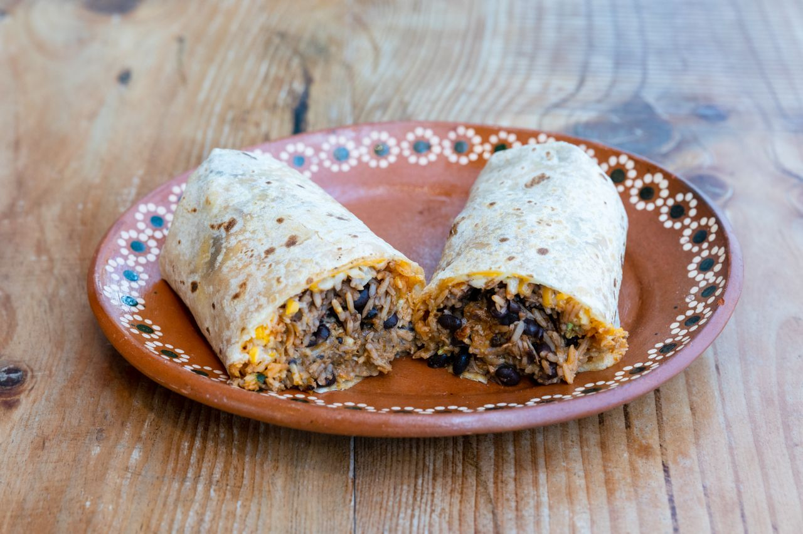

Burrito Recipe

Description
A delicious and easy-to-make burrito recipe that's perfect for any meal.
Ingredients
- 1 cup cooked rice
- 1 cup seasoned ground beef
- 4 large tortillas
- 1 cup shredded cheese
- 1 cup diced tomatoes
- 1 cup chopped onions
- 1 cup sour cream
Steps
- Cook the rice according to package directions.
- Season the ground beef with your favorite spices and cook until browned.
- Warm the tortillas in a microwave or on a skillet.
- Assemble the burritos by placing the rice, beef, cheese, tomatoes, and onions in the center of each tortilla.
- Scoop a dollop of sour cream onto each burrito.
- Fold the sides of the tortilla over the filling and roll it up tightly.
- Serve immediately and enjoy!
Home